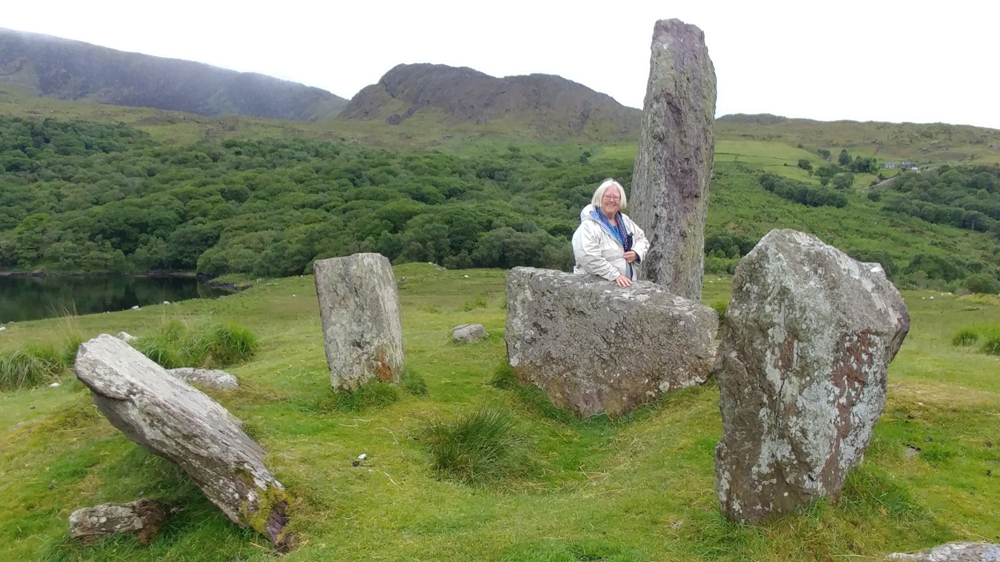
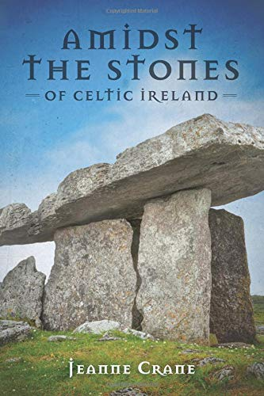
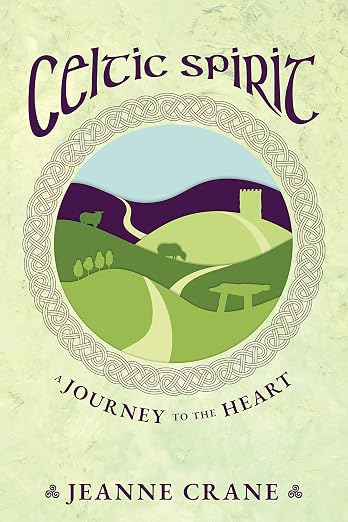

A hundred thousand welcomes. Introducing you to Celtic Spirit.

My first trip to Ireland was as a teenager, and I immediately felt a deep connection to my Celtic roots. On a much later trip I was introduced to the ancient sites, the dolmens, stone circles and beehive structures, that have captivated me ever since. These thin places stir me beyond any cathedral, temple or sacred site I have visited.
My career calling was as a life coach, organizational consultant and facilitator of change. At this later stage of life I apply those skills to writing, traveling and presenting on Celtic wisdom, Celtic spirituality and places to visit in Celtic lands.
In my writing and speaking I like to share Celtic wisdom on:

Abby and Mark want the freedom to explore their new relationship away from the watchful eyes of family and neighbors. He is fascinated by lighthouses and she is drawn to ancient Celtic stone circles. They embark on a road trip around the coast of Southwest Ireland that takes them into mystical and magical experiences far beyond their planned itinerary.
Buy on Amazon
May the road rise up to meet you. When American transformation coach Dorrie Donahue conceives of a tour to Ireland, her deepest wish is to help travelers toward personal transformation, using the mysteries and magic of Ireland as a portal to self-discovery. A story of ancient history, new friendships and opening to new possibilities.
Buy on AmazonA travel series offering an up-close glimpse of the Emerald Isle along the Wild Atlantic Way. Pictures and conversational notes share the obvious stops and hidden treasures, especially the thin places. Lightweight soft covers (8.25 x 6 in) for travelers and armchair travelers alike.
More at Jeanne Crane's Amazon author page.
Jeanne speaks to libraries, community clubs and festivals, including the Niagara Celtic Festival Celtic College and the Dublin Ohio Irish Festival. Her style is interactive and tailored to the audience.
Book clubs: Jeanne is delighted to join a Zoom discussion or an in-person meeting for Amidst the Stones, Celtic Spirit or the Snapshots of Ireland series.
Canandaigua, NY
jeanne@jeannecrane.com